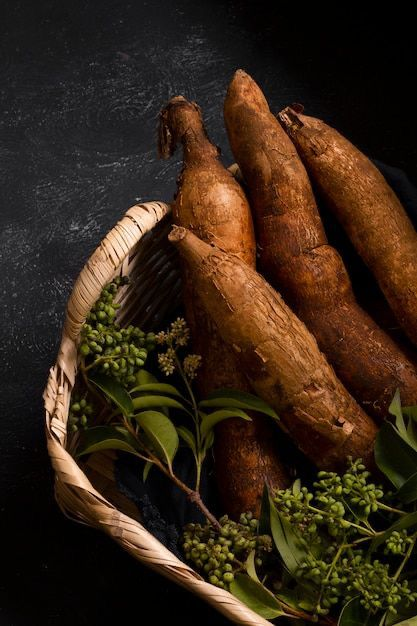

Batata-doce
🌱 Como cultivar
A batata-doce precisa de solo fofo, profundo e bem drenado. Prefere climas quentes e muito sol. O plantio pode ser feito com ramas (mudas de caule). O ciclo de cultivo dura de 90 a 120 dias, quando as folhas começam a amarelar, sinalizando que já pode colher.
🍽️ Receitas
💡 Curiosidade
Apesar do nome, a batata-doce não é parente da batata comum! E sabia que ela pode ter cores incríveis, como roxa, laranja e até creme? É uma explosão de cores no prato e super saudável!